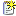
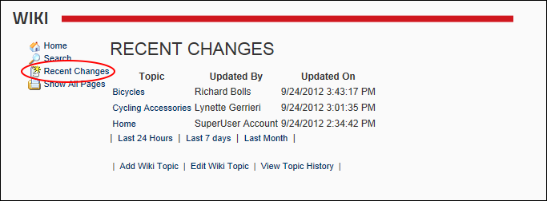

Viewing Recent Changes
How to view recent changes that have been made to topics within a Wiki module.
- Click the  Recent Changes link. This displays all recent changes.

- Optional. Click one of the following links to filter recent changes by one of these time periods:
- Last 24 Hours
- Last 7 Days
- Last Month